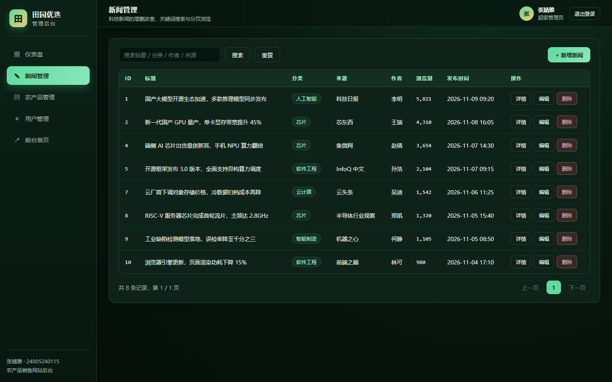

管理后台 · 02
新闻管理
后台新闻管理页面，支持按标题搜索、分页浏览，以及新增、编辑与删除新闻。
admin/news.html

页面说明
列表区域展示新闻编号、标题、分类、来源与发布时间，顶部提供搜索与新增按钮；编辑与删除通过弹窗完成，避免误操作。
所有写操作都需要携带管理员令牌，接口返回统一 JSON 结构，页面根据 code 判断成功与否并给出提示。
功能要点
- 按标题关键词搜索
- 分页浏览与总条数展示
- 新增与编辑新闻弹窗
- 删除二次确认
- 操作结果提示与列表刷新
接口说明
| 方法 | 接口路径 | 说明 |
|---|---|---|
| GET | /api/admin/news |
分页查询新闻列表 |
| POST | /api/admin/news |
新增新闻 |
| GET | /api/admin/news/:id |
查询新闻详情 |
| PUT | /api/admin/news/:id |
修改新闻 |
| DELETE | /api/admin/news/:id |
删除新闻 |
相关文件
admin/news.html
admin/js/zhang_admin_news.js
admin/js/zhang_admin_api.js